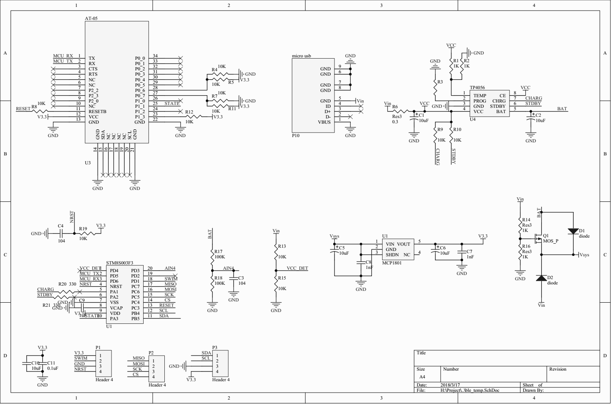

1、概述：先说下这是什么东西
先说下名字，是一个BLE项目，所以属于IOT，为什么叫BT05呢，是因为这里用了个叫AT-05的BLE模块，如下图，蓝牙（BT）+05就是BT05了，本来只是想做个BLE温度计的，后来发现自己做的板子 除了可以接温度模块，还可以接其他传感器，留出的IO口还可以输出PWM，也就是说还可以做灯控，干脆叫BT05 IOT算了。
2、硬件
先来个整体框图：
1、MCU：STM8S003F3，ST 8位MCU，SOP20封装，8K flash,1K RAM,128 Byte EEPROM，外设有：SPI，ADC，I2C，TIM（有PWM功能），UART等
2、BLE模块：AT-05，基于TI CC2541的蓝牙4.0透传模块，支持AT命令就模块进行配置，如改波特率，名字等
3、LDO：MCP1801，3.3V输出，最大电流150mA，低压降(100mA时200mA)，静态电流小（25uA),使用这个主要考虑到使用电池时，LDO压降不能太大，功耗也不能太高
4、锂电池充电IC：TP4056,是单节锂电池恒流/恒压线性充电IC，5V输入，最大充电电流1A，选择这个主要是用起来简单，购买也方便，也便宜。
原理图如下：

除了上面提到的一些IC外还有其他部分，
1、检测电池电压：通过MCU ADC读取电池电压，如下图：
2、电源选择：
1、当没有接DC电源时，通过电池供电，
2、当连接了DC电源时，不管有没有电池，都是通过DC电源供电，当有电池时，电池在充电时，是通过供电，而不是通过电池供电。可以减轻充电IC的负担，当DC功率足够大时，也不会影响充电时间。
如下图：
最后做出来的PCB板如下：
3、软件部分
(1):整体框架